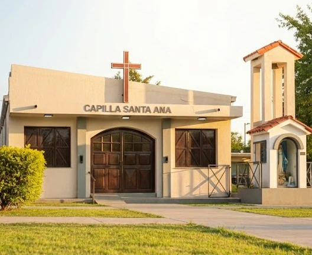

Bienvenido a Casa
Tu refugio espiritual está aquí. Un espacio de encuentro, paz y vida en comunidad en el corazón de Villa Parque Santa Ana.
Un mensaje para tu corazón
Alimento Espiritual
Tómate un minuto en Su presencia. Que esta Palabra calme tu espíritu, renueve tus fuerzas y te acompañe durante toda la semana.
Tu Familia Espiritual
Nuestra Vida en Comunidad
No caminamos solos. Acercate a descubrir los espacios donde crecemos en la fe, compartimos alegrías y ayudamos a los demás.
Grupos Juveniles
Sábados 16:30 hs
Sala de Catequesis
- Pre-Juvenil: 12 a 14 años
- Juvenil: 15+ años
Camino de Vida
Jubileo 2025 - Peregrinos de Esperanza
Encuentro profundo de La Palabra y Adoración Eucarística.
Jueves 19:00 hs
Ropero Comunitario
Modalidad "Lleve y Traiga"
Un espacio comunitario permanente preparado para intercambiar o retirar prendas con dignidad.
Martes 17:00 hs
Jueves 16:30 hs
Vida Sacramental
Acompañamos cada etapa de tu vida cristiana: Bautismos, Primera Comunión, Confirmación, Casamientos, Confesiones y Unción de los enfermos.
Cáritas y Talleres
Brindamos apoyo solidario a familias en vulnerabilidad y fomentamos el desarrollo a través de talleres de oficios y manualidades.
El centro de nuestra fe
Celebremos la Eucaristía
La Misa es el momento central donde nos encontramos como comunidad para dar gracias y llenarnos de paz.
Nuevos Horarios
A partir de Marzo
Tendremos misa dos veces por mes. Los días y horarios exactos están por confirmarse.
¡Pronto compartiremos el nuevo cronograma!
Rezamos por vos y los tuyos
Buzón de Intenciones
Escribí tu pedido por salud, trabajo, una acción de gracias o por un ser querido que partió. Lo llevaremos directamente al Altar en la próxima Misa.
Nuestras puertas están abiertas
Contacto y Redes Sociales
Comunicate con nosotros, sumate a nuestros canales o acercate a la Capilla en Villa Parque Santa Ana, Córdoba.
Hablá con Paola
Escribinos por WhatsApp para consultas generales, sacramentos o intenciones.
Enviar MensajeCanal de Difusión
Sumate a nuestro canal de WhatsApp para enterarte de horarios y novedades al instante.
Unirme al CanalNuestras Redes
Seguinos en Facebook e Instagram, y sumate a nuestro Grupo para hacer comunidad digital.